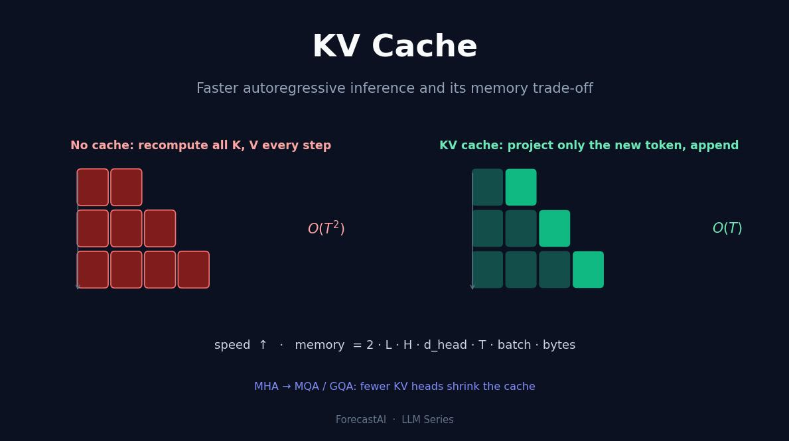
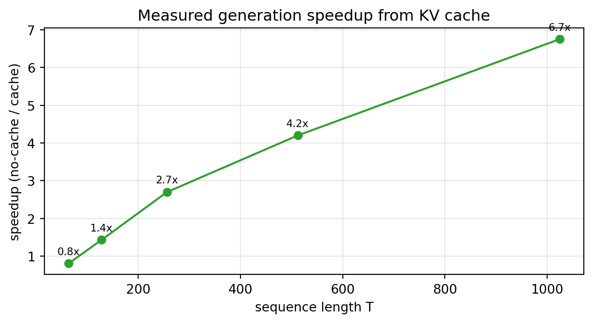

KV 캐시 없이 자기회귀 디코딩을 하면 왜 막대한 연산이 낭비되는지, 그리고 키와 값을 캐싱하면 스텝당 연산이 어떻게 O(T²)에서 O(T)로 줄어드는지 살펴봅니다. NumPy로 만든 장난감 디코더로 캐시가 수치적으로 완전히 동일함을 증명하고, 실제 속도 향상을 측정한 뒤, 캐시가 요구하는 메모리를 모델링하고 MQA·GQA가 그 비용을 어떻게 줄이는지 확인합니다.
저자
Prof. Shin
공개
2026-08-06

[개념 시각화] 캐시가 없으면 매 스텝마다 모든 키와 값을 다시 계산합니다(O(T²) 연산). KV 캐시는 새 토큰만 투영해 이어붙이므로(O(T)), 선형으로 늘어나는 메모리를 대가로 속도를 얻습니다.
대규모 언어 모델은 한 번에 토큰 하나씩 텍스트를 생성합니다. 다음 토큰을 만들려면 지금까지 쓴 모든 내용을 대상으로 순전파를 수행하고, 토큰 하나를 샘플링해 이어붙인 뒤 이 과정을 반복합니다. 이를 그대로 구현하는 가장 단순한 방식, 즉 매 스텝마다 전체 시퀀스를 모델에 통과시키는 방식에는 놀라울 만큼 많은 낭비가 숨어 있습니다. 스텝 t에서 모델은 이전 t개 토큰 전부에 대해 키와 값 벡터를 다시 계산합니다. 그 토큰들은 바뀌지 않았고 키와 값도 한 스텝 전과 완전히 같은데도 말입니다. KV 캐시는 이 중복을 제거합니다. 현대 트랜스포머 서빙에서 가장 중요한 추론 최적화 기법이면서도, 그 원리는 처음부터 직접 유도할 수 있을 만큼 단순합니다. 이 글에서는 바로 그 유도를 해봅니다. 최소한의 인과적 디코더를 만들고, 캐싱이 재계산과 수치적으로 완전히 동일함을 보인 뒤, 속도 향상을 측정하고, 마지막으로 캐시가 청구하는 메모리 비용을 마주합니다.
자기회귀 디코딩은 왜 같은 일을 반복하는가
셀프 어텐션은 학습된 세 개의 투영을 통해 각 토큰을 쿼리·키·값으로 매핑하고, 각 쿼리가 각 키와 얼마나 강하게 맞는지에 따라 값을 섞습니다. 인과적 디코더에서 가장 새로운 토큰의 쿼리는 자신 이하 모든 토큰의 키에 어텐션을 겁니다. 여기서 핵심이 되는 구조적 사실은, 특정 토큰의 키와 값이 오직 그 토큰의 표현에만 의존하며 뒤에 오는 어떤 것과도 무관하다는 점입니다. 토큰 5의 키와 값이 한 번 계산되고 나면, 모델이 이후 토큰을 아무리 많이 생성해도 그 값은 결코 바뀌지 않습니다.
단순 디코딩은 이 사실을 무시합니다. 매 스텝마다 접두부 전체를 다시 투영하므로, T개 토큰을 생성하는 데 대략 3 · (1 + 2 + … + T) ≈ 3·T²/2번의 투영 연산이 필요합니다. 앞쪽 토큰의 키와 값은 수백 번 다시 계산되지만 결과는 언제나 동일합니다. 캐시가 없애는 것이 바로 이 중복입니다.
캐시: 새 토큰만 투영하고, 이어붙이고, 재사용한다
해법은 각 토큰의 키와 값을 처음 계산할 때 저장해 두었다가 이후에는 재사용하는 것입니다. 매 스텝마다 모델은 새로 들어온 토큰 하나만 투영하고(3·t가 아니라 3번의 투영), 그 키와 값을 진행 중인 캐시에 이어붙인 뒤, 누적된 캐시에 대해 어텐션을 계산합니다. 출력은 수학적으로 전혀 바뀌지 않고, 낭비되던 재계산만 사라집니다.
이 주장을 가장 확실하게 검증하는 방법은 두 경로를 모두 구현해 비교하는 것입니다. 아래는 NumPy로 작성한 장난감 단일 헤드 인과적 디코더입니다. “캐시 없음” 루프는 매 스텝마다 접두부 전체에 대해 K와 V를 다시 계산하고, “KV 캐시” 루프는 새 토큰만 투영해 이어붙입니다. 투영 연산량을 연산의 대리 지표로 세고, 두 방식이 동일한 출력을 내는지 확인합니다.
import numpy as npdef softmax(x, axis=-1): z = x - x.max(axis=axis, keepdims=True) e = np.exp(z)return e / e.sum(axis=axis, keepdims=True)rng = np.random.default_rng(0)d, T =64, 128Wq = rng.standard_normal((d, d)) / np.sqrt(d)Wk = rng.standard_normal((d, d)) / np.sqrt(d)Wv = rng.standard_normal((d, d)) / np.sqrt(d)X = rng.standard_normal((T, d)) / np.sqrt(d) # 하나씩 들어오는 토큰 임베딩# (A) 캐시 없음: 매 스텝마다 접두부 전체에 대해 K, V 재계산proj_A =0outA = np.zeros((T, d))for t inrange(1, T +1): prefix = X[:t] Q = prefix @ Wq K = prefix @ Wk # 매 스텝 재계산 V = prefix @ Wv # 매 스텝 재계산 proj_A +=3* t # t개 토큰에 대해 3번 투영 scores = (Q[-1] @ K.T) / np.sqrt(d) outA[t -1] = softmax(scores) @ V# (B) KV 캐시: 새 토큰만 투영해 캐시에 이어붙임proj_B =0K_cache = np.zeros((T, d)); V_cache = np.zeros((T, d))outB = np.zeros((T, d))for t inrange(1, T +1): x = X[t -1] q = x @ Wq; k = x @ Wk; v = x @ Wv # 1개 토큰에 대해 3번 투영 proj_B +=3 K_cache[t -1] = k; V_cache[t -1] = v scores = (q @ K_cache[:t].T) / np.sqrt(d) outB[t -1] = softmax(scores) @ V_cache[:t]print("두 출력이 동일한가 (allclose):", np.allclose(outA, outB, atol=1e-10))print(f"투영 행 수 캐시없음={proj_A} KV캐시={proj_B} 비율={proj_A/proj_B:.1f}x (T={T})")print(f"캐시없음은 ~3*T^2/2 = {3*T*T//2}, KV캐시는 3*T = {3*T} 로 증가")
두 출력이 동일한가 (allclose): True
투영 행 수 캐시없음=24768 KV캐시=384 비율=64.5x (T=128)
캐시없음은 ~3*T^2/2 = 24576, KV캐시는 3*T = 384 로 증가
두 출력은 비트 단위까지 동일합니다. 이것이 핵심입니다. 캐시는 근사가 아닙니다. 그런데도 시퀀스 길이가 겨우 128 토큰일 때 이미 단순 경로는 수십 배 많은 투영 연산을 수행합니다. 캐시는 정확도를 전혀 희생하지 않고 속도를 사 옵니다.
O(T²)에서 O(T)로: 낭비되는 연산 세어보기
투영 횟수를 세면 점근적 성질이 구체적으로 드러납니다. 캐시가 없을 때 누적 연산량은 3·(1 + 2 + … + T), 즉 생성 토큰 수의 이차 함수로 증가하는 반면, 캐시는 스텝마다 세 번의 투영만 하므로 직선을 그립니다. 둘을 함께 그리면 간극이 눈에 보입니다. 이차 곡선이 직선에서 떨어져 나가 다시는 돌아오지 않습니다.
import matplotlib.pyplot as pltTs = np.arange(1, 257)nocache = np.cumsum(3* Ts) # 스텝별 3t의 합 -> ~3*T^2/2cache =3* Ts # 매 스텝 새 토큰 하나에 대해 3번 투영fig, ax = plt.subplots(figsize=(6.5, 3.6))ax.plot(Ts, nocache, label="no cache (~3·T²/2)")ax.plot(Ts, cache, label="KV cache (3·T)")ax.set_xlabel("generated tokens T")ax.set_ylabel("cumulative projection-rows")ax.set_title("Wasted projection work without a KV cache")ax.legend(fontsize=9); ax.grid(alpha=0.3)fig.tight_layout(); plt.show()
그림 1: T개 토큰을 생성하는 동안의 누적 투영 연산량: 캐시가 없으면 이차, 있으면 선형.
그래서 생성이 길어질수록 캐시의 가치는 커집니다. 짧은 답변이라면 낭비를 견딜 만하지만, 수천 토큰짜리 문서에서는 이차 항이 완전히 지배하게 되고, 재계산 방식이라면 생성 속도가 실용 불가능할 만큼 느려집니다.
속도 향상 측정하기
투영 횟수는 대리 지표일 뿐이고, 사용자가 체감하는 것은 실제 벽시계 시간입니다. 다음 실험은 길이를 늘려 가며 시퀀스를 두 번씩 생성합니다. 한 번은 전부 재계산하고, 한 번은 캐시를 사용해, 두 실행 시간의 비율을 보고합니다. 여기서는 모델 차원이 작고(d = 256) NumPy가 CPU에서 돌기 때문에 절대 수치는 실전 수준이 아니라 예시일 뿐이지만, 추세가 핵심입니다. 시퀀스가 길어질수록 속도 향상이 벌어지는데, 이는 이차 대 선형 분석이 예측한 그대로입니다.
import timed =256def gen_no_cache(T): Wq = rng.standard_normal((d, d))/np.sqrt(d); Wk = rng.standard_normal((d, d))/np.sqrt(d); Wv = rng.standard_normal((d, d))/np.sqrt(d) X = rng.standard_normal((T, d))/np.sqrt(d); out = np.zeros((T, d))for t inrange(1, T +1): p = X[:t]; Q = p @ Wq; K = p @ Wk; V = p @ Wv out[t -1] = softmax((Q[-1] @ K.T)/np.sqrt(d)) @ Vreturn outdef gen_cache(T): Wq = rng.standard_normal((d, d))/np.sqrt(d); Wk = rng.standard_normal((d, d))/np.sqrt(d); Wv = rng.standard_normal((d, d))/np.sqrt(d) X = rng.standard_normal((T, d))/np.sqrt(d) Kc = np.zeros((T, d)); Vc = np.zeros((T, d)); out = np.zeros((T, d))for t inrange(1, T +1): x = X[t -1]; q = x @ Wq; Kc[t -1] = x @ Wk; Vc[t -1] = x @ Wv out[t -1] = softmax((q @ Kc[:t].T)/np.sqrt(d)) @ Vc[:t]return outTb = [64, 128, 256, 512, 1024]; sp = []for T in Tb: t0 = time.perf_counter(); gen_no_cache(T); t1 = time.perf_counter(); gen_cache(T); t2 = time.perf_counter() sp.append((t1 - t0)/(t2 - t1))fig, ax = plt.subplots(figsize=(6.5, 3.6))ax.plot(Tb, sp, "o-", color="C2")ax.set_xlabel("sequence length T"); ax.set_ylabel("speedup (no-cache / cache)")ax.set_title("Measured generation speedup from KV cache")ax.grid(alpha=0.3)for x, y inzip(Tb, sp): ax.annotate(f"{y:.1f}x", (x, y), textcoords="offset points", xytext=(0, 7), fontsize=8, ha="center")fig.tight_layout(); plt.show()

그림 2: KV 캐시로 측정한 생성 속도 향상 (NumPy, 단일 헤드, d=256). 시퀀스가 길수록 이득이 커집니다.
테스트한 가장 긴 길이에서 캐시는 이미 한 자릿수 배율을 넘어 빠르며, 실제 하드웨어에서 실제 모델(여러 층, 여러 헤드, GPU 커널)을 돌리면 효과는 더욱 커집니다. 모든 실전 LLM 서빙 스택이 KV 캐시를 유지하는 이유가 여기에 있습니다. 캐시가 없다면 긴 문맥 생성은 과거를 다시 계산하는 데 지배당할 것입니다.
청구서가 도착한다: 캐시 메모리
공짜는 없습니다. 캐시는 연산을 메모리와 맞바꾸며, 그 메모리는 크고, 우리가 키우고 싶어 하는 모든 축에 대해 선형으로 증가합니다. 모델은 토큰마다 모든 층과 모든 어텐션 헤드에서 키와 값 벡터를 저장해야 하므로, 전체 사용량은 다음과 같습니다.
\[\text{KV 바이트} = 2 \cdot L \cdot H \cdot d_{\text{head}} \cdot T \cdot \text{batch} \cdot \text{원소당\_바이트},\]
여기서 앞의 2는 키와 값을 따로 세는 것이고, L은 층 수, H는 키/값 헤드 수, T는 시퀀스 길이입니다. 모든 항이 실전에서 키우는 차원(더 깊은 모델, 더 긴 문맥, 더 큰 배치)이므로, 캐시는 추론 중 GPU 메모리의 가장 큰 소비자가 조용히 될 수 있습니다. 아래 함수는 8192 토큰 문맥, fp16 기준으로 잘 알려진 여러 구성에 대해 이 모델을 평가합니다.
풀 멀티헤드 어텐션을 쓰는 7B 모델은 단일 8k 토큰 시퀀스만으로도 수 기가바이트의 KV 캐시가 필요하며, 이는 배치를 고려하기 전 수치입니다. 배치를 하면 동시 요청 수만큼 사용량이 곱해집니다. 긴 문맥, 높은 처리량 서빙에서는 모델 가중치가 아니라 KV 캐시 메모리가 병목을 결정하는 제약인 경우가 많습니다.
캐시 줄이기: MHA → MQA → GQA
메모리 공식은 가장 값싼 지렛대를 곧바로 가리킵니다. 바로 키/값 헤드 수 H입니다. 표준 멀티헤드 어텐션(MHA)은 모든 쿼리 헤드에 각자의 키·값 헤드를 줍니다. 멀티쿼리 어텐션(MQA)은 쿼리 헤드는 그대로 두되 하나의 키/값 헤드를 모두가 공유하게 하여, 헤드 수만큼 캐시를 줄입니다[Shazeer, 2019]. 절감 효과는 극적이지만, KV 헤드를 하나로 축소하면 품질이 떨어지고 학습이 불안정해질 수 있습니다. 그룹 쿼리 어텐션(GQA)은 오늘날 대부분의 최신 모델이 채택한 절충안입니다. 쿼리 헤드를 몇 개의 그룹으로 나누고 각 그룹이 하나의 키/값 헤드를 공유하여, MHA와 MQA 사이를 보간합니다[Ainslie et al., 2023]. 아래 그래프는 같은 구성들의 캐시 증가를 추적하며, 같은 깊이에서 MHA와 GQA를 대비해 이 지렛대를 분명히 보여줍니다.
그림 3: KV 캐시는 시퀀스 길이에 선형으로 증가합니다. KV 헤드가 적을수록(GQA/MQA) 전체 직선이 아래로 내려갑니다.
동일한 32L/128, seq=8192: MHA 32헤드 = 4.29 GB 대 GQA 8 KV헤드 = 1.07 GB (4배)
키/값 헤드를 32개에서 8개로 옮기면 32개 쿼리 헤드를 모두 유지하면서도 캐시가 4분의 1로 줄어듭니다. 미스트랄이나 더 큰 Llama 계열이 GQA를 채택하는 이유입니다. 아키텍처는 부분적으로 긴 문맥에서도 KV 캐시를 감당 가능하게 유지하려고 선택됩니다.
기본을 넘어서
KV 헤드를 줄이는 것은 첫 수에 불과합니다. 캐시가 추론 메모리를 지배하기 때문에, 이를 겨냥한 시스템 연구가 하나의 큰 흐름을 이룹니다. 효율적 서빙 분석은 KV 캐시를 예산을 배정하고 스케줄링해야 할 일급 자원으로 다룹니다[Pope et al., 2023]. PagedAttention은 운영체제의 페이징 아이디어를 빌려 캐시를 비연속 블록에 저장함으로써, 예약된 메모리의 상당 부분을 낭비하던 단편화를 없애고 훨씬 높은 서빙 처리량을 가능하게 합니다[Kwon et al., 2023]. 이를 보완하는 기법들, 즉 캐시된 키와 값을 8비트 혹은 4비트로 양자화하기, 가장 쓸모없는 항목을 축출하거나 압축하기, 공통 접두부를 가진 요청 간에 캐시를 공유하기 등은 모두 같은 T에 선형인 항을 서로 다른 각도에서 공략합니다.
결론
KV 캐시가 트랜스포머 추론에서 중심 자리를 차지하는 이유는 깔끔한 맞교환에 있습니다. 이미 본 키나 값을 결코 다시 계산하지 않음으로써 자기회귀 디코딩의 스텝당 연산을 이차에서 선형으로 바꾸며, 우리의 동일성 검증은 이것이 출력에 아무런 영향도 주지 않음을 확인해 주었습니다. 그 대가는 2 · L · H · d_head · T · batch · bytes로 늘어나는 메모리 사용량이며, 긴 문맥과 높은 배치에서는 이것이 모델 가중치 자체를 넘어설 수 있습니다. 이 공식을 이해하면 현대의 설계 지형이 읽힙니다. MQA와 GQA는 H 항을 줄이고, 페이징과 양자화는 상수와 바이트 폭을 공략하며, 이 모든 기법은 누군가 캐시의 선형 증가를 보고 그냥 두기엔 너무 비싸다고 판단했기에 존재합니다. 캐시는 긴 문맥 생성이 빠른 이유이고, 그 메모리를 관리하는 일은 긴 문맥 생성이 애초에 가능한 이유입니다.
참고문헌
Shazeer, N. (2019). Fast Transformer Decoding: One Write-Head is All You Need. arXiv preprint arXiv:1911.02150.
Ainslie, J., Lee-Thorp, J., de Jong, M., Zemlyanskiy, Y., Lebrón, F., & Sanghai, S. (2023). GQA: Training Generalized Multi-Query Transformer Models from Multi-Head Checkpoints. Proceedings of the 2023 Conference on Empirical Methods in Natural Language Processing (EMNLP). arXiv:2305.13245.
Pope, R., Douglas, S., Chowdhery, A., Devlin, J., Bradbury, J., Levskaya, A., Heek, J., Xiao, K., Agrawal, S., & Dean, J. (2023). Efficiently Scaling Transformer Inference. Proceedings of Machine Learning and Systems (MLSys). arXiv:2211.05102.
Kwon, W., Li, Z., Zhuang, S., Sheng, Y., Zheng, L., Yu, C. H., Gonzalez, J. E., Zhang, H., & Stoica, I. (2023). Efficient Memory Management for Large Language Model Serving with PagedAttention. Proceedings of the 29th Symposium on Operating Systems Principles (SOSP). arXiv:2309.06180.
Vaswani, A., Shazeer, N., Parmar, N., Uszkoreit, J., Jones, L., Gomez, A. N., Kaiser, Ł., & Polosukhin, I. (2017). Attention Is All You Need. Advances in Neural Information Processing Systems (NeurIPS), 30, 5998–6008.